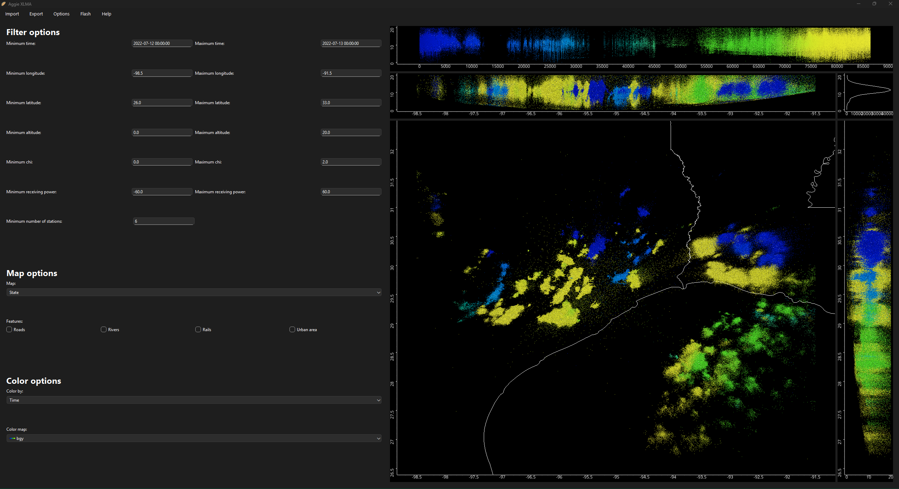

Aggie XLMA
A Python-based application that helps you view, analyze and interact with LMA (Lightning Mapping Array) data. This application replicates XLMA’s essential features while operating significantly faster. It is not meant as an alternative and does not offer full functionality. We suggest checking out the PyXLMA project for that purpose. Our mission is to perform the most used tasks of viewing, selection, and extracting flash information quickly and reliably with a modern UI.
Installation instructions:
Install Git LFS using:
git lfs install.Clone the repository using:
git clone https://github.com/krishnacalindi/hlma.gitand move into it:cd hlma.Create a virtual environment:
python -m venv venvActivate virtual enviroment. This can vary depending on your OS.
Install required libraries:
pip install -r requirements.txtRun the application using
python hlma.py.
Features:
GUI based: we offer a GUI heavily influenced by feedback from LMA scientists. 
Filtering: We offer the ability to filter the data using specified filter fields, or selecting with a polygon.
Plotting: We provide a suite of map features, map options and colorcet’s entire collection of named linear colormaps.
Exporting: You can export LMA data as .dat files that are compatible with XLMA and lmatools and parquet files for further processing.
States: You can save the state of the application at any point, and use the saved file to get back to where you were!
Flash algorithms: We offer simple dot-to-dot and McCaul flash algorithm via a custom implementation. This feature is still in beta, please be cautious of errors.
Contact:
If you would like to contribute please reach out to Dr.Timothy Logan.